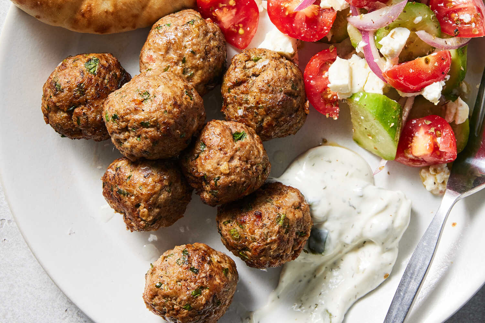

Greek Meatballs

Description
These meatballs are inspired by keftedes, a traditional Greek meatball made with beef and lamb and seasoned
with a mix of herbs and spices. While variations of keftedes abound, many include fresh
bread crumbs, grated onion and tomato, along with lots of fresh mint and parsley. The tomato lends the
meatballs a hint of sweetness and acidity, and also helps make them incredibly moist and tender. While not
traditional, this recipe opts for panko instead of fresh bread crumbs, for ease. Rather than being softened
with milk to form a panade, the bread crumbs go into the meatball mix on their own and soak up the flavorful
juices from the onion and tomato. Serve these meatballs with homemade tzatziki, a simple salad and pita on
the side, or in tomato sauce for a hearty, comforting dinner.
Ingredients
- ½ cup (lightly packed) grated red or yellow onion (from about ½ large onion)
- 1 medium tomato, grated (about 5 ounces)
- 1 pound lean ground beef
- ½ pound ground lamb
- ½ cup panko bread crumbs
- 1 large egg, lightly beaten
- ⅓ cup finely chopped fresh mint
- ⅓ cup finely chopped fresh parsley
- 2 large garlic cloves, grated or very finely minced
- 1 teaspoon dried oregano
- 1 teaspoon ground coriander
- ½ teaspoon ground cumin
- Salt and pepper
- ¼ cup olive oil
- Tzatziki, salad and pita (all optional), for serving
Steps
-
Place the grated onion and tomato in a fine-mesh sieve over the sink and stir a few times, pressing on
the mixture to drain the excess liquid. (Some moisture should remain; do not squeeze in a dish towel.)
Transfer the remaining onion and tomato to a large bowl.
-
Add the beef, lamb, panko, egg, mint, parsley, garlic, oregano, coriander and cumin, plus 1½ teaspoons
salt and ½ teaspoon pepper; mix gently but thoroughly.
-
Using a 2 tablespoon-scoop or two spoons, form meatballs that are about 1½ inches wide. Place them on a
plate, cover and chill for at least 30 minutes, and up to 24 hours, to allow the meatballs to firm up.
-
In a large (12-inch) skillet, heat the oil over medium-high. When the oil is hot (it should sizzle
immediately if you drop a bread crumb into the pan), fry the meatballs in 2 to 3 batches, flipping
occasionally and lowering the heat as necessary to prevent them from getting too dark, until browned all
over and just cooked through, 5 to 7 minutes.
-
Transfer the cooked meatballs to a paper towel-lined plate, and serve hot or warm with any combination
of tzatziki, salad and pita, if desired.
Go back to homepage